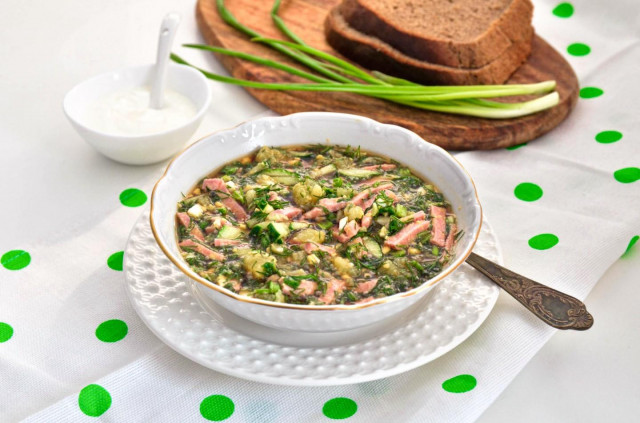

| Название блюда | Рейтинг | Рецепт | Фото блюда |
|---|---|---|---|
| Пельмени домашние классические | 9.5/10 | Ссылка на рецепт | |
| Картошка жаренная с грибами и луком | 9.8/10 | Ссылка на рецепт | |
| Суп куриный с домашней лапшой | 9.0/10 | Ссылка на рецепт | |
| Салат оливье классический | 9.7/10 | Ссылка на рецепт | |
| Жаркое из говядины с картошкой в горшочках | 9.9/10 | Ссылка на рецепт |
| Название блюда | Рейтинг | Рецепт | Фото блюда |
|---|---|---|---|
| Суп молочный с вермешелью | 0.5/10 | Ссылка на рецепт | |
| Окрошка на квасе | 2.8/10 | Ссылка на рецепт |  |
| Каша гороховая | 3.0/10 | Ссылка на рецепт | |
| Салат Цезарь классический | 2.7/10 | Ссылка на рецепт |  |
| Картошка жаренная с лисичками и луком | 1.9/10 | Ссылка на рецепт |